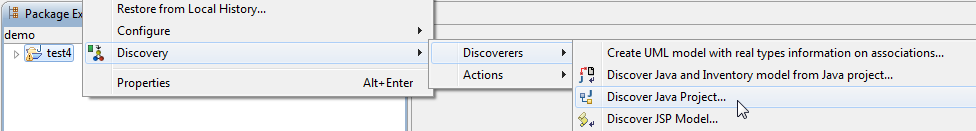
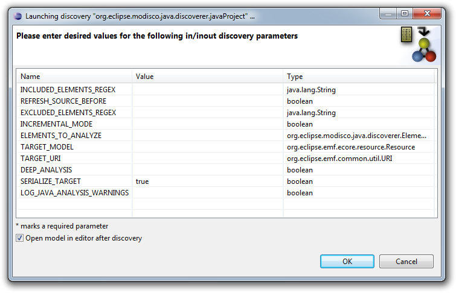
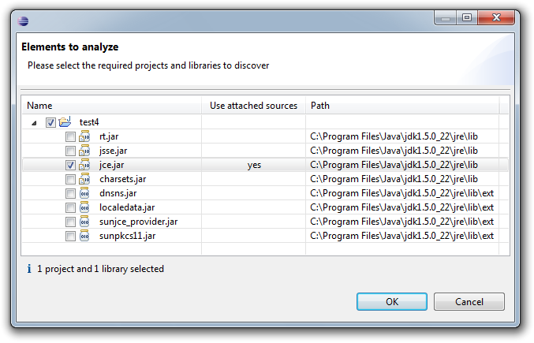
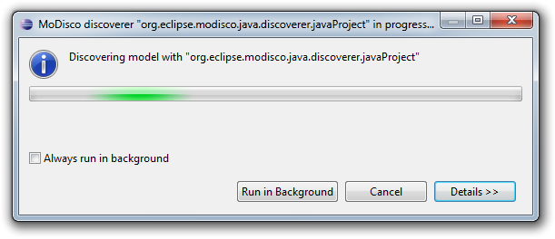
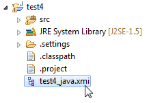
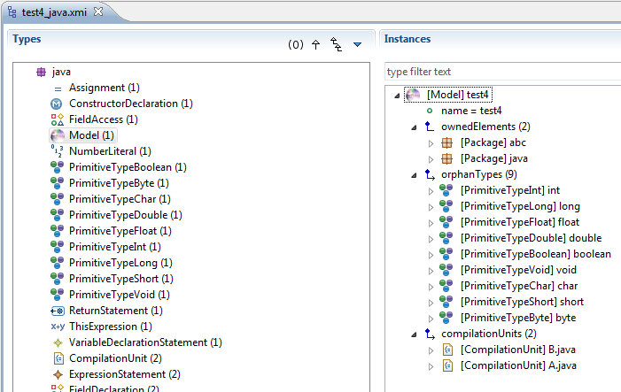
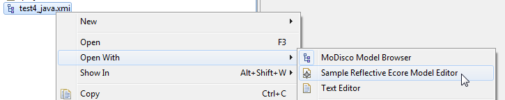

The goal of the Java Discoverer plug-in is to allow practical extractions of Java models from Java projects.
Quality disclaimer: this Java Discoverer was tested on projects of varied sizes: see the Java discoverer benchmark.
This plug-in aims at analyzing Java source code compliant with version 3 of "Java Language Specification" from Sun Microsystems and providing a model describing the information found, conforming to the Java metamodel.
A Java model contains the full abstract syntax tree of the Java program: each statement such as attribute definition, method invocation or loop is described. In addition, links between elements are resolved (by resolved link we mean for instance a link between a method invocation and the declaration of this method, or between the usage of a variable and its declaration). The model can thus be seen as an abstract syntax graph (ASG).
The plug-in provides the user with a contextual menu to easily create models.
By right-clicking on a Java Project in the Eclipse Package Explorer view, you can quickly create the Java model of your application (see next Figure).

A discovery parameters dialog opens to let you specify the parameters of the discovery:


Once launched, a progress dialog will appear as soon as the operation begins. Depending on the size of your application, the reverse engineering process might take some time to complete:

At the end of the process, the newly created model file is added to the root of your project if you set SERIALIZE_TARGET to true:

And the model is opened in the default model browser if you selected Open model in editor after discovery:

The Java XMI files (with a filename ending in "_java.xmi" by convention) can be opened in any model browser:
